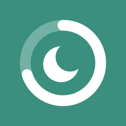
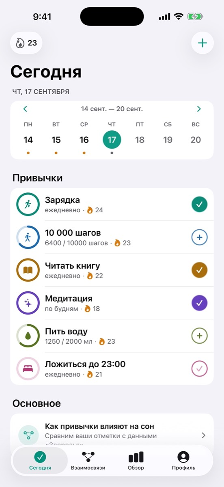
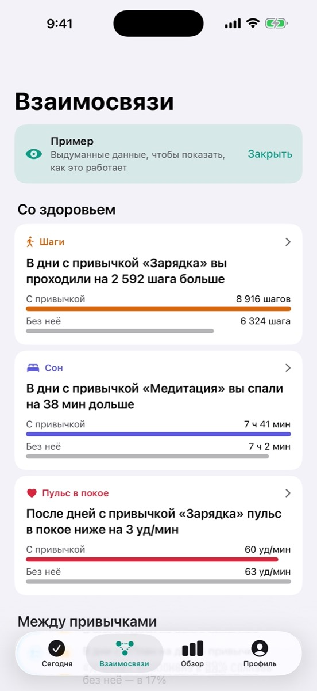
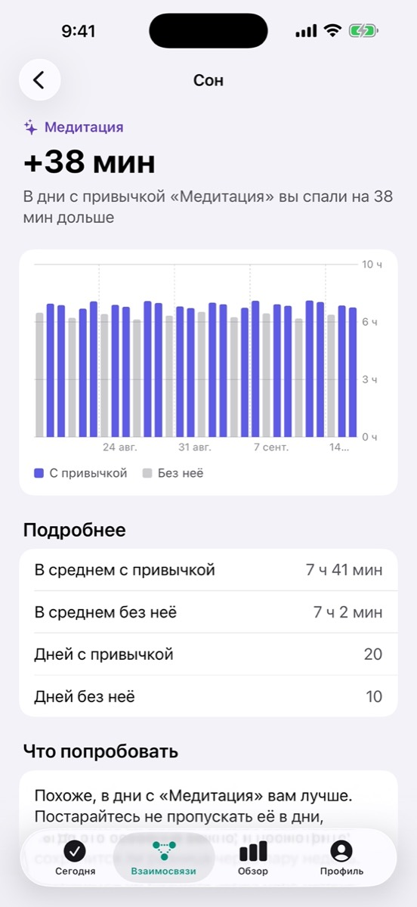
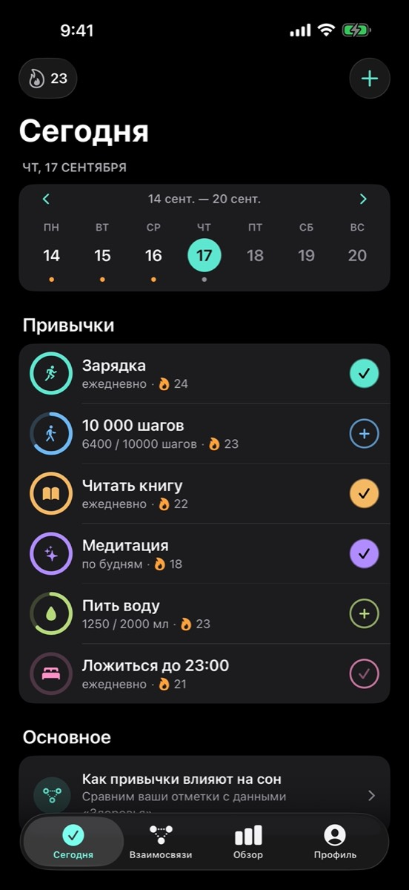
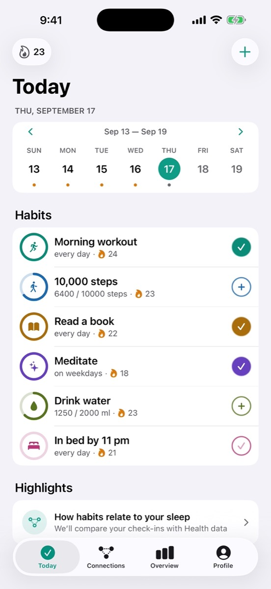
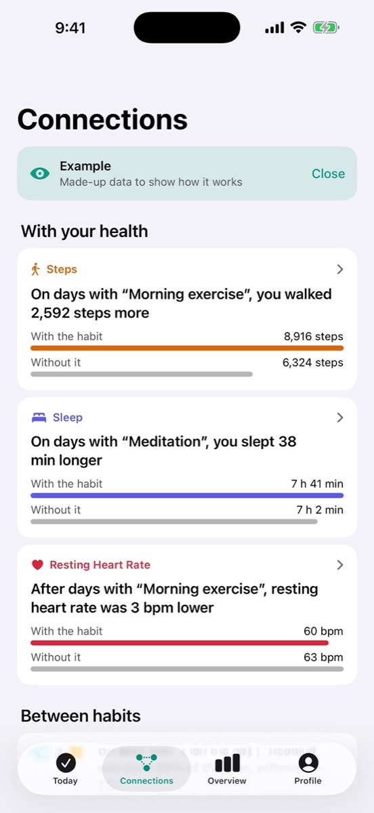
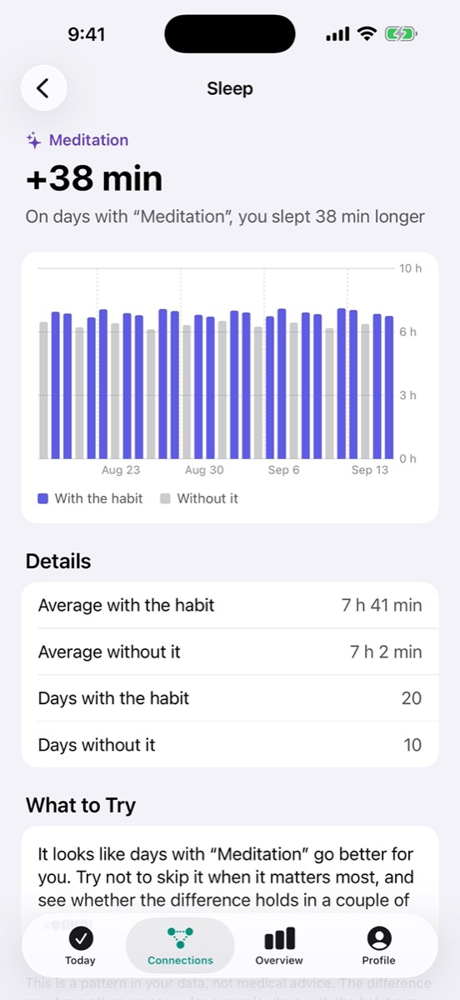
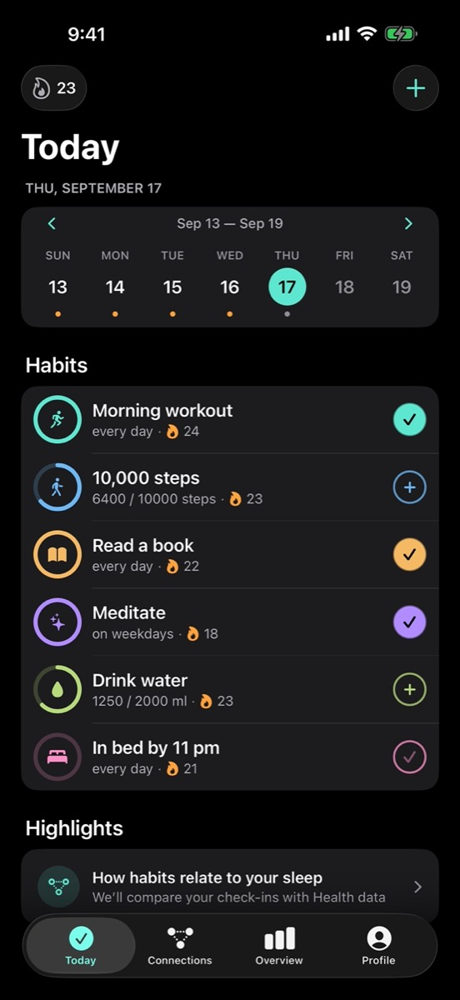

Streakly
Streakly
Streakly
Отмечайте привычки в одно касание и смотрите, как они совпадают с вашим сном, шагами и пульсом.
Streakly
Check off habits with a single tap and see how they line up with your sleep, steps and heart rate.
Streakly
Marca tus hábitos con un toque y descubre cómo se relacionan con tu sueño, tus pasos y tu pulso.








Всё важное — на одном экране.
Простой трекер, который со временем показывает, что на самом деле меняется в ваших днях.
Everything that matters, on one screen.
A simple tracker that, over time, shows what actually changes in your days.
Lo importante, en una sola pantalla.
Un registro sencillo que, con el tiempo, te muestra qué cambia de verdad en tus días.
Отметка в одно касание
Кольцо у каждой привычки показывает, сколько сделано за день. Шаги и минуты можно брать из «Здоровья».
One-tap check-ins
A ring on every habit shows how much is done today. Steps and minutes can come straight from Health.
Marca con un toque
El anillo de cada hábito muestra cuánto llevas hoy. Los pasos y los minutos pueden venir de la app Salud.
Взаимосвязи
Streakly сравнивает дни с привычкой и без неё и показывает, как менялись сон, шаги и пульс — и какие привычки тянут за собой другие.
Connections
Streakly compares days with and without a habit, shows how your sleep, steps and heart rate changed — and which habits pull others along.
Conexiones
Streakly compara los días con y sin un hábito, te muestra cómo cambiaron tu sueño, tus pasos y tu pulso, y qué hábitos arrastran a otros.
Серии и щиты
Каждые 7 дней серии дают щит заморозки: один неудачный день не обнулит прогресс. Напоминания приходят вовремя.
Streaks and shields
Every 7 days of streak earns a freeze shield, so one bad day doesn’t erase your progress. Reminders arrive right on time.
Rachas y escudos
Cada 7 días de racha ganas un escudo de congelación: un mal día no borra tu progreso. Los recordatorios llegan a tiempo.
Данные остаются у вас
Никаких аккаунтов, рекламы и аналитики. Данные «Здоровья» обрабатываются только на iPhone и никуда не отправляются.
Your data stays yours
No accounts, ads or analytics. Health data is processed only on your iPhone and is never sent anywhere.
Tus datos son tuyos
Sin cuentas, anuncios ni analítica. Los datos de Salud se procesan solo en tu iPhone y no se envían a ninguna parte.
Взаимосвязи — это совпадения в ваших данных, а не медицинский совет. Streakly не ставит диагнозов и не заменяет врача.
Connections are patterns in your own data, not medical advice. Streakly does not diagnose anything and is not a substitute for a doctor.
Las conexiones son coincidencias en tus datos, no consejos médicos. Streakly no realiza diagnósticos ni sustituye a un médico.
Бесплатно — главное. В Pro — всё.
До 3 привычек, связи между привычками и одна связь со сном или шагами за 30 дней — бесплатно. Streakly Pro открывает пульс, вариабельность и энергию, периоды до года, советы, сколько угодно привычек, иконки и выгрузку в CSV.
The essentials are free. Pro unlocks it all.
Up to 3 habits, connections between habits and one sleep or steps connection over 30 days are free. Streakly Pro adds heart rate, variability and energy, ranges up to a year, tips, unlimited habits, app icons and CSV export.
Lo esencial es gratis. Pro lo abre todo.
Hasta 3 hábitos, las conexiones entre hábitos y una conexión con el sueño o los pasos en 30 días son gratis. Streakly Pro añade pulso, variabilidad y energía, periodos de hasta un año, consejos, hábitos ilimitados, iconos y exportación a CSV.
Поддержка
Нашли ошибку или есть идея? Напишите нам — отвечаем в течение пары дней.
streakly.support@icloud.comПочему на вкладке «Взаимосвязи» пусто?
Для вывода нужно хотя бы 7 дней с привычкой и 7 дней без неё за выбранный период. Если данных «Здоровья» нет совсем, проверьте доступ: «Настройки» → «Здоровье» → «Доступ к данным и устройства» → Streakly. Сон записывают Apple Watch или режим сна на iPhone. Посмотреть, как всё работает, можно на примере — кнопка «Посмотреть на примере».
Куда уходят мои данные «Здоровья»?
Никуда. Сон, шаги и пульс читаются и сравниваются прямо на iPhone, в iCloud и на серверы они не попадают. Подробнее — в политике конфиденциальности.
Как добавить виджет?
Нажмите и удерживайте пустое место на экране «Домой» → «Изменить» → «Добавить виджет» → Streakly.
Как не потерять серию, если пропустил день?
За каждые 7 дней серии даётся щит заморозки. Он закрывает один пропущенный день. Если серия оборвалась вчера, её можно вернуть за щит на экране серии.
Отмечаю привычки после полуночи — серия обрывается
В настройках есть пункт «Когда заканчивается день». Сдвиньте границу, и поздние отметки зачтутся за прошедший день.
Как перенести данные на новый телефон?
Если на обоих телефонах выполнен вход в один iCloud, привычки перенесутся сами. Можно и вручную: «Настройки» → «Резервная копия» → сохраните файл, затем восстановите его на новом телефоне.
Не приходят напоминания
Проверьте, что уведомления разрешены: «Настройки» iPhone → «Уведомления» → Streakly. И что у привычки задано время напоминания.
Как отменить подписку или восстановить покупку?
Отменить: «Настройки» iPhone → ваше имя → «Подписки» → Streakly Pro. Восстановить на новом телефоне: откройте Streakly Pro в профиле и нажмите кнопку восстановления внизу экрана.
Support
Found a bug or have an idea? Email us — we reply within a couple of days.
streakly.support@icloud.comWhy is the Connections tab empty?
A connection needs at least 7 days with the habit and 7 days without it in the selected range. If there’s no Health data at all, check access in Settings → Health → Data Access & Devices → Streakly. Sleep is recorded by Apple Watch or Sleep Focus on iPhone. To see how it works, tap “See an Example”.
Where does my Health data go?
Nowhere. Sleep, steps and heart rate are read and compared right on your iPhone; they never go to iCloud or any server. See the privacy policy for details.
How do I add a widget?
Touch and hold an empty area of the Home Screen → Edit → Add Widget → Streakly.
How do I keep my streak if I miss a day?
You get a freeze shield for every 7 days of streak. It covers one missed day. If your streak broke yesterday, you can restore it with a shield on the streak screen.
I check in after midnight and my streak breaks
Use the “When the day ends” setting. Move the boundary and late check-ins will count for the previous day.
How do I move my data to a new phone?
If both phones use the same iCloud account, your habits move over automatically. You can also do it manually: Settings → Backup → save the file, then restore it on the new phone.
Reminders don’t arrive
Make sure notifications are allowed in iPhone Settings → Notifications → Streakly, and that the habit has a reminder time set.
How do I cancel or restore my subscription?
To cancel: iPhone Settings → your name → Subscriptions → Streakly Pro. To restore on a new phone: open Streakly Pro from your profile and tap the restore button at the bottom of the screen.
Soporte
¿Has encontrado un error o tienes una idea? Escríbenos: respondemos en un par de días.
streakly.support@icloud.com¿Por qué la pestaña Conexiones está vacía?
Hacen falta al menos 7 días con el hábito y 7 días sin él en el periodo elegido. Si no hay ningún dato de Salud, revisa el acceso en Ajustes → Salud → Acceso a datos y dispositivos → Streakly. El sueño lo registran el Apple Watch o el modo Sueño del iPhone. Para ver cómo funciona, pulsa «Ver un ejemplo».
¿Adónde van mis datos de Salud?
A ninguna parte. El sueño, los pasos y el pulso se leen y se comparan en tu iPhone; nunca van a iCloud ni a ningún servidor. Más detalles en la política de privacidad.
¿Cómo añado un widget?
Mantén pulsada una zona vacía de la pantalla de inicio → Editar → Añadir widget → Streakly.
¿Cómo conservo la racha si fallo un día?
Por cada 7 días de racha recibes un escudo de congelación. Cubre un día perdido. Si la racha se rompió ayer, puedes recuperarla con un escudo en la pantalla de racha.
Marco después de medianoche y la racha se rompe
Usa el ajuste «Cuándo termina el día». Mueve el límite y las marcas tardías contarán para el día anterior.
¿Cómo paso mis datos a un teléfono nuevo?
Si los dos teléfonos usan la misma cuenta de iCloud, tus hábitos pasan solos. También puedes hacerlo a mano: Ajustes → Copia de seguridad → guarda el archivo y restáuralo en el teléfono nuevo.
No llegan los recordatorios
Comprueba que las notificaciones están permitidas en Ajustes del iPhone → Notificaciones → Streakly, y que el hábito tiene una hora de recordatorio.
¿Cómo cancelo o restauro la suscripción?
Para cancelar: Ajustes del iPhone → tu nombre → Suscripciones → Streakly Pro. Para restaurar en un teléfono nuevo: abre Streakly Pro desde tu perfil y pulsa el botón de restaurar al final de la pantalla.